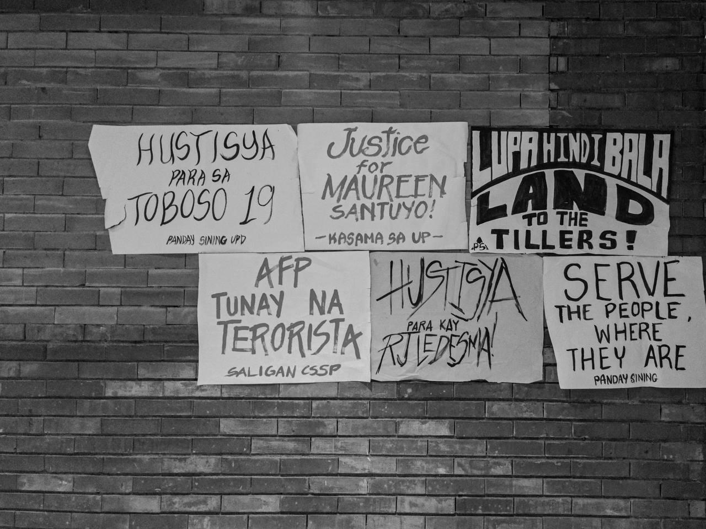
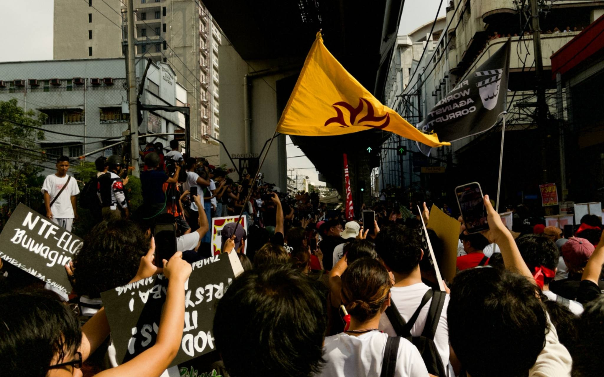
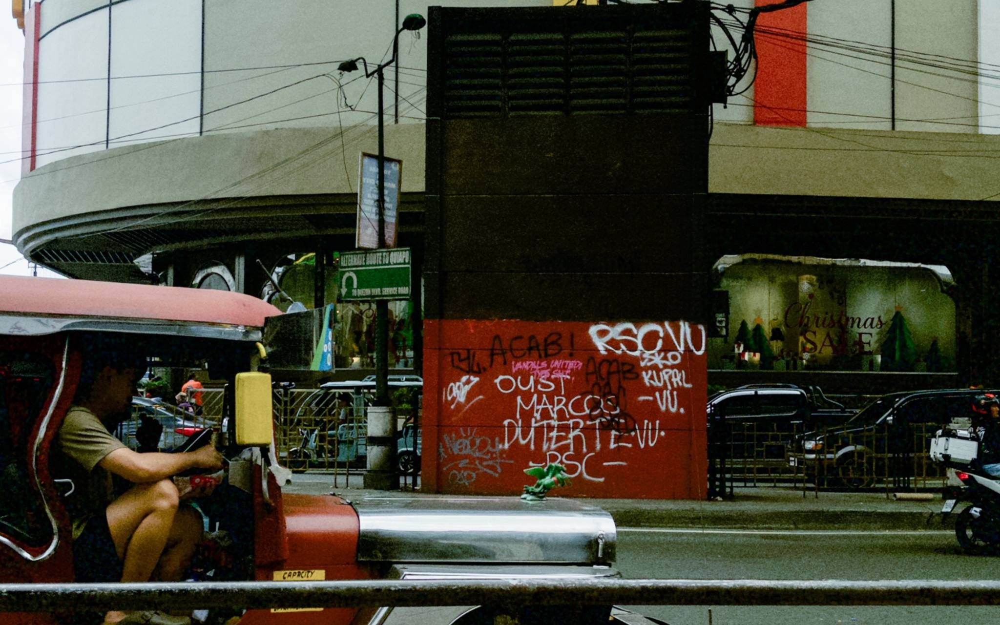

When I go out, I love to capture the calls and mobilizations happening on the street. I plan to pursue learning composition and explore different styles as well.

Pag-alala sa Toboso 19: May 2026
As a memorial tribute to the Toboso 19, this project features my photographs from "Negros 19: Panaghoy at Paghihimagsik" at the UP Film Center.
Where shots of the placards, collage boards, and tribute performances for the victims serve to reflect and remember the
causes they advocated and the struggles they carried.

Rebolusyon ni Bonifacio, Isulong mo Bagong Tipo: November 2025
Gathering my photographs at the mobilization on the day of Bonifacio’s birth, these shots include the placards, crowd, political graffitis,
and effigy where I was involved in the production. The street mobilization from Liwasang Bonifacio toward Mendiola calls for anti-corruption, accountability, and
remembrance of the historical struggle.

Ikulong na 'yan, mga kurakowtch!: September 2025
This project contains my photographs of the nationwide rally as we marched from National Museum to Luneta and to Mendiola.
The pictures gathered are calls for justice related to the flood control issue, which are reflected in many forms of expression: placards, protest banners,
chants, political graffitis, and other artistic expressions.